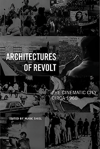

<HTML><head>
<meta name='robots' content='noindex,nofollow' /><script> (function(i,s,o,g,r,a,m){i['GoogleAnalyticsObject']=r;i[r]=i[r]||function(){  (i[r].q=i[r].q||[]).push(arguments)},i[r].l=1*new Date();a=s.createElement(o),  m=s.getElementsByTagName(o)[0];a.async=1;a.src=g;m.parentNode.insertBefore(a,m)   })(window,document,'script','//www.google-analytics.com/analytics.js','ga');   ga('create', 'UA-43183130-1', 'temple.edu');   ga('send', 'pageview'); </script><title>Edited by Mark Shiel: Architectures of Revolt - Print</TITLE><link rel="stylesheet" href="../general.css" type="text/css"><SCRIPT LANGUAGE = JAVASCRIPT></SCRIPT></HEAD><BODY LINK="#3152A5" VLINK="#3152A5" ALINK=Gray BGCOLOR=White><CENTER><P CLASS=intro><br>A groundbreaking exploration of how filmmaking, architecture, and urban planning shaped and were shaped by mass protest movements in and around 1968<br><br></P></CENTER><br>&nbsp;<!--none//--><Table width="100%" border=0 cellspacing=5><tr><td width="175" align="center"></td><td><h1 class = "booktitle">Architectures of Revolt</h1> <h1 class = "subtitle">The Cinematic City circa 1968</h1><h3 class="author">Edited by Mark Shiel </h3><p class="info">paper EAN: 978-1-4399-1004-7</br>$36.95, Jun 18, <font color=#990033>Available</font><br><p class="info">cloth EAN:  978-1-4399-1003-0</br>$99.50, Jun 18, <font color=#990033>Available</font><br><p class="info">Electronic Book EAN: 978-1-4399-1005-4</br>$36.95, Jun 18, <font color=#990033>Not Yet Published Preorder</font><br><p class="info">262 pp, 6 x  9, 34 halftones</p></td></tr></table></P></td></tr></table><BR>
	

<BLOCKQUOTE><p><i>"Mark Shiel has produced the first volume of its kind and, indeed, </i>Architectures of Revolt <i> is a must-read book on film and architecture that maps a fascinating journey into the intertwining paths between political revolution and revolutionary cinematic practices."</i><br> &#8212;<b>Richard Koeck</b>, University of Liverpool, Director of the Centre for Architecture and Visual Arts<br></BLOCKQUOTE>
	
<P><p>Coinciding with the fiftieth anniversary of the worldwide mass protest movements of 1968-against war, imperialism, racism, poverty, misogyny, and homophobia-the exciting anthology <i>Architectures of Revolt</i> explores the degree to which the real events of political revolt in the urban landscape in 1968 drove change in the attitudes and practices of filmmakers and architects alike. <br><br>In and around 1968, as activists and filmmakers took to the streets, commandeering public space, buildings, and media attention, they sought to re-make the urban landscape as an expression of utopian longing or as a dystopian critique of the established order. In <i>Architectures of Revolt</i>, the editor and contributors chronicle city-specific case studies from Paris, Berlin, Milan, and Chicago to New York, Los Angeles, Mexico City, and Tokyo. The films discussed range from avant-garde and agitprop shorts to mainstream narrative feature films. All of them share a focus on the city and, often, particular streets and buildings as places of political contestation and sometimes violence, which the medium of cinema was uniquely equipped to capture. <br><br><i>Contributors include: Stephen Barber, Stanley Corkin, Jesse Lerner, Jon Lewis, Gaetana Marrone, Jennifer Stob, Andrew Webber and the editor.</i><br>
	
<P CLASS="top"><A HREF="#top">BACK TO TOP</A></P></p><P></P><P></b></p>
	
	<P><h2  class="inpageheading"><A NAME="excerpt"></a>Excerpt</h2><p><A HREF="http://www.temple.edu/tempress/chapters_1800/2264_ch1.pdf">Read an excerpt from the Introduction (pdf).</A><br>
		
		
	<p><h2  class="inpageheading"><A NAME="reviews"></a>Reviews</h2>
	
	<p><i>"Exploring a range of global cities through the lens of film theory, urban studies, architecture, and theories of everyday life, this book is a brilliant intervention into cinema's role in the history of urban rebellions. Organized around the volatile events in and around 1968, the essays offer important new insights into how filmmakers both depicted and organized urban protests. What makes this volume especially unique is its emphasis on the city's role in shaping the space of cinema itself as a vehicle for imagining social change. Timely in every way, </i>Architectures of Revolt <i> resonates with urgent concerns about social movements, media activism, and the networked landscapes of contemporary cities."</i><br>&#8212;<b>Lynn Spigel,</b> Frances E. Willard Professor of Screen Cultures at Northwestern University, and author of <i>TV by Design: Modern Art and the Rise of Network Television</i><br>
		
		<P CLASS="top"><A HREF="#top">BACK TO TOP</A></P></b>


<p><h2 class="inpageheading"><A NAME="contents"></a>
	Contents</h2><P><span style="font-family: 'Verdana';font-size: 13px;" >List of Illustrations<br/>Acknowledgments<br/><br/>Introduction: Cinema, Architecture, and Cities circa 1968 &bull; Mark Shiel<br/>1. The Cin&eacute;tracts, D&eacute;tournement, and Social Space in Paris &bull; Jennifer Stob<br/>2. Milan, the Cine City of 1968: Metamorphosis and Identity &bull; Gaetana Marrone<br/>3. Inextinguishable Fire&mdash;or How to Make a Film in Berlin in 1968 &bull; Andrew J. Webber<br/>4. Slouching toward Chicago in Search of Peace and Love: Medium Cool and Chicago 1968 &bull; Jon Lewis<br/>5. New York, 1968 &bull; Stanley Corkin<br/>6. &quot;It's a Big Garage.&quot; Cinematic Images of Los Angeles circa 1968 &bull; Mark Shiel<br/>7. Cinema and the Mexico City of 1968 &bull; Jesse Lerner<br/>8. Tokyo 1969: Revolutionary Image-Thieves in the Disintegrating City &bull; Stephen Barber<br/>Contributors<br/>Film Title Index<br/>Subject Index</span></P>

<P CLASS="top"><A HREF="#top">BACK TO TOP</A></P></p></P><BR>&nbsp;<p>
	
	
<P><H2  class="inpageheading"><A NAME="author bio"></a>About the Author(s)</H2><p><b>Mark Shiel</b> is Reader in Film Studies and Urbanism in the Department of Film Studies at King's College London. He is the author of <i>Hollywood Cinema and the Real Los Angeles</i> and <i>Italian Neorealism: Rebuilding the Cinematic City,</i> and the co-editor of <i>Screening the City</i> and <i>Cinema and the City: Film and Urban Societies in a Global Context</i>.<br>
	
<P CLASS="top"><A HREF="#top">BACK TO TOP</A></P></P></P>

<P><h2 class="inpageheading"><a name="subjects"></a>Subject Categories</h2> 
	<p><a href="http://www.temple.edu/tempress/urban.html" target="_top">Urban Studies</a> <br>
		<a href="http://www.temple.edu/tempress/cinema.html" target="_top">Cinema Studies</a> <br>
		<a href="http://www.temple.edu/tempress/social.html" target="_top">Community Organizing and Social Movements</a> <br>
		<a href="" target="_top"></a> <br>
		<a href="" target="_top"></a> </p></P>

<P><h2 class="inpageheading">In the Series</h2><p><a target="_top" href="http://www.temple.edu/tempress/urban_life.html" OnMouseOver="window.status='Click for other books in this series!';return true;"OnMouseOut="window.status=" ><i>Urban Life, Landscape, and Policy</i></a></P>

<p><p>The <em>Urban Life, Landscape, and Policy</em> Series, edited by David Stradling, Larry Bennett, and Davarian Baldwin, was founded by the late Zane L. Miller to publish books that examine past and contemporary cities, focusing on cultural and social issues. The editors seek proposals that analyze processes of urban change relevant to the future of cities and their metropolitan regions, and that examine urban and regional planning, environmental issues, and urban policy studies, thus contributing to ongoing debates. </p></P></P></P>

<P CLASS="top"><A HREF="#top">BACK TO TOP</A></P></td><td width=2%>&nbsp;</td><td width=5>&nbsp;</td></tr></table><BR><font face="Arial" size="1"><a href="copyright.html" OnMouseOver="window.status='Web Copyright Policy';return true;" OnMouseOut="window.status=''" TITLE="Web Copyright Policy">&copy;</a> 2018 <a href="http://www.temple.edu" target="new" OnMouseOver="window.status='Link to Temple University home page';return true;" OnMouseOut="window.status=''" TITLE="Link to Temple University home page">Temple University</a>. All Rights Reserved. This page: http://www.temple.edu/tempress/titles/2264_reg.html</font></BODY></HTML>                    
